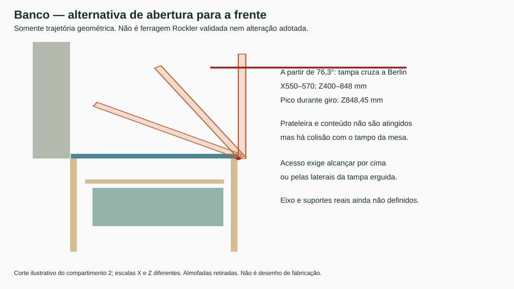

23/10/2026. Revisão dimensional independente de levantamento real do apartamento. Fonte geométrica: R44 consolidada, SHA256 9187c163d7d827e12387e7e9c9e953b0380c55bcc8aaed3e872f83c4665d839e. Não foram alteradas suas peças ou os controles. Esta entrega contém dimensionamento e triagens; nenhuma ferragem nova foi declarada instalada.
Fórmula m=L×A×E×ρ, dimensões em metros. Valores por folha, sem acabamento, pegas, adesivos e ferragens móveis. Os cenários650/750/900kg/m³ não são densidades confirmadas da chapa. Não usar volume de conjunto CAD como se todo ele fosse MDF. Espelheiro inclui vidro4mm com densidade hipotética2500kg/m³: 2,222kg de vidro por folha. Para massa final, pesar composição acabada ou obter ficha de cada material.
| Família | L × A × E (mm) | Folhas | Dobradiças/folha, estudo | Massa kg — densidade650/750/900 | Formato |
|---|---|---|---|---|---|
| Pia | 322 × 718 × 18 | 2 | 2 | 2.70 / 3.12 / 3.75 | alta/estreita |
| Depurador | 322 × 590 × 18 | 2 | 2 | 2.22 / 2.56 / 3.08 | alta/estreita |
| Uso diário | 270.5 × 1016 × 18 | 2 | 3 | 3.22 / 3.71 / 4.45 | alta/estreita |
| Micro-ondas | 345.5 × 608 × 18 | 2 | 2 | 2.46 / 2.84 / 3.40 | alta/estreita |
| Geladeira | 397.5 × 582 × 18 | 2 | 2 | 2.71 / 3.12 / 3.75 | alta/estreita |
| Lavanderia | 414.5 × 578 × 18 | 2 | 2 | 2.80 / 3.23 / 3.88 | alta/estreita |
| Escritório | 496 × 548 × 18 | 4 | 2 | 3.18 / 3.67 / 4.40 | alta/estreita |
| Cabeceira A | 439.75 × 306 × 18 | 2 | 2 | 1.57 / 1.82 / 2.18 | baixa/larga |
| Cabeceira B | 440.25 × 306 × 18 | 2 | 2 | 1.58 / 1.82 / 2.18 | baixa/larga |
| Espelheiro | 297 × 748 × 18 | 2 | 3 | 4.82 / 5.22 / 5.82 | alta/estreita |
| Roupeiro correr | 995 × 1999 × 18 | 2 | correr | 23.27 / 26.85 / 32.22 | alta/estreita |
| Maleiro correr | 670 × 237 × 18 | 2 | correr | 1.86 / 2.14 / 2.57 | baixa/larga |
| Canto A/B | 271 × 306 × 18 | 2 | 2 | 0.97 / 1.12 / 1.34 | alta/estreita |
| Banheiro correr R43 | 292 × 500 × 18 | 2 | correr | 1.71 / 1.97 / 2.37 | alta/estreita |
As famílias de abrir totalizam24folhas e52dobradiças no estudo vigente:42 comuns/20folhas,4 no canto e6 no espelheiro. As4dobradiças e2folhas antigas do gabinete do banheiro foram excluídas: a R43 as substituiu por portas de correr. A tabela históricaR41/R42 com56não é quantitativo vigente de compra. A contagem não é aprovação de resistência. Roupeiro/maleiro têm4folhas e4kitsRO-62 de uma porta; cada kit tem2carros,2guias e2freios. O banheiroR43 acrescenta2folhas comRO25/RM026, em lista separada; não transformar estes em kitsRO-62. Não contar subcomponentes como novos kits.
A orientação oficial Blum relaciona quantidade a peso acabado, altura, largura e material; dá2dobradiças como referência para4–6kg e3para6–12kg, com aplicação até600mm de largura. Recomenda maior afastamento possível entre dobradiças e atenção a portas altas/estreitas. Essa orientação não é tabela FGVTN.
A alternativa TN MS Slow H0 existente nos documentos possui canecoØ35×11,3mm, K5/recobrimento16 e duas posiçõesK6/17 na vizinha da cabeceira. Em chapa18 sobra6,7mm de espessura; o corteBlum13 deixa5mm. Não transferir corte, padrão de parafusos, calço ou limitador entre marcas. Há também produto TN MS C9,8 de código51MS15XTN4900BF, cujo recobrimento difere; não confundir com o51MS15XTN2200BF estudado. Conferência dimensional nominal por família.
O curso86° no CAD utiliza cinemáticaBlum. A TN MS abre110° e não possui trajetória/componente limitador86° confirmado nesta pesquisa. Nas portas onde há obstáculo, uma simulaçãoBlum não validaFGVTN. Se mantidaBlum, o limitador70T3553 é referência comercial compatível com a família e deve equipar todas as dobradiças da folha limitada; seu encaixeCAD ainda tem diagnóstico pendente. Não estender automaticamente a compra a52limitadores.
Rometal RO-62: limite60kg por porta, espessura15–25mm, AP=AV−35 e transpasse20–30. O modelo usa18mm, transpasse30; roupeiro995×1999 e maleiro670×237. A massa bruta é menor que60kg nos três cenários, mas esse limite não dimensiona painel, fixação, trilhos, retenção ou empenamento.
Compatibilidade nominal resolvida: 2034−35=1999 e272−35=237. O passo38, a repartição10/25 da folga vertical e o volume dos carros são hipóteses do modelo, não cotas executivas de fabricante. Portanto o espaço frontal82mm e a zona550mm de roupa não estão homologados pela ferragem real.
Não acrescentar Comfort240 ao maleiro: a instrução oficial Comfort240 indica faixa15–40kg para gatilho cinza e40–60kg para preto. As folhas do maleiro têm aproximadamente2,14–2,57kg no cenário750–900; ficam abaixo da faixa. O sistema de correr sem amortecedor continua candidato; a aplicação em folha tão baixa e larga permanece sem confirmação. No roupeiro, enquadrar peso não basta para adicionar esse acessório: faltam largura mínima aplicável, guia, posição e curso.
Ferragens de referência:4kitsRO-62/GuiaFlex4032; trilho superiorRM-025 e inferiorRM-023 conforme vãos, não4barras automaticamente; retenções e freios do kit. Evitar compra duplicada. A seção do manual R14 registraRM-025 com28mm; outra matriz histórica dizia32mm. Prevalecer o desenho do perfil exato e confirmar SKU, sem manter duas larguras contraditórias.
A solução atual possui2folhas292×500×18,4carrosRO25,4guias e4trechosRM026 de564mm (inferiores/superiores). As folhas brutas pesam1,71–2,37kg no cenário650–900, antes descontar cavas e somar ferragens. O quadro frontal é removível600×70×543, preso por4M6×100/porcas transversais; as fixações são estudo, não carga admitida. O espaço interno564×382×509 foi preservado; acessos270/235mm e manutenção comfrente retirada564. Não comprar as4dobradiças antigas. O relatório dimensional da R43 admite explicitamente carros/guias como envoltórias hipotéticas; sua ausência de colisão não aprova oRO25real.
Tampas preservadas971×448×20 e825×448×20. Com eixo na borda e centro uniforme a224mm, M=m×9,80665×0,224. Isto é momento gravitacional da tampa, não carga do assento.
| Tampa | Densidade hipotética kg/m³ | Massa painel kg | Momento Nm | Entra no par S-AT01S? |
|---|---|---|---|---|
| 971 | 650 | 5.655 | 12.42 | sim, apenas momento |
| 971 | 750 | 6.525 | 14.33 | sim, apenas momento |
| 971 | 800 | 6.960 | 15.29 | sim, apenas momento |
| 971 | 900 | 7.830 | 17.20 | sim, apenas momento |
| 825 | 650 | 4.805 | 10.55 | não |
| 825 | 750 | 5.544 | 12.18 | não |
| 825 | 800 | 5.914 | 12.99 | sim, apenas momento |
| 825 | 900 | 6.653 | 14.61 | sim, apenas momento |
A Sugatsune S-AT01S ocupa nominalmente127mm fechado,65mm de altura e20,65mm de largura. A altura é25mm menor que os90mm acima da prateleira. O fabricante admite uso em pares; o manual oficial informa6,1–8,8Nm por unidade, resultando12,2–17,6Nm para o par. Isso corresponde aproximadamente5,55–8,01kg a224mm. A tampa menor no cenário750fica praticamente no limiar inferior; acrescentar peças móveis muda o balanço. A maior no cenário900tem apenas≈0,18kg de margem até17,6Nm, insuficiente para presumir acabamentos/ferragens sem cálculo. Não escolher mola mais forte sem verificar também o limite inferior.
O que essa candidata não resolve: requer dobradiça de eixo único, incompatível com dobradiça de caneco/múltiplos eixos; tem assistência/retenção10–80°, sem fechamento amortecido. Cabe em altura estática, mas invade uma faixa do interior e exige posição livre no giro. O STEP público levou à página de acesso, não a arquivoCAD, e isso está registrado emFontes. Não foi criada geometria falsa do produto. Suporte, fixação e eixo superior devem ser resolvidos antes de afirmar preservação do armazenamento.
O encosto chega aX100, a tampa iniciaX102 e sua quina superior está emZ420. Com eixo sob a tampa(Z≤400), para não varrer o encosto durante0–90° é necessárioX≥101+(420−Z)²/4; aZ400 exigeX≥201 apenas para tangência. O testeR46 demonstrou que esse deslocamento faz a tampa1 atingir os potes a40° e a tampa2 atingir a prateleira a66°. Calçar18para19,05mm resolve somente espessura de fixação; não resolve o giro. Referências: ensaio traseiro e ensaio interno.
Uma dobradiça piano sob a tampa mantém o eixo abaixoZ400 e sofre o mesmo problema. Embutir apenas no corpo não eleva magicamente o eixo ao topo da tampa. Elevar o eixo exige conectar o braço móvel sem atravessar os20mm da tampa e sem usar a folga traseira2mm como espaço garantido. Não foi encontrada montagem comercial comprovada com essas restrições.
Foi ensaiada a rotação oposta, em torno da frente do banco. Mantive tampas, armazenamento e folga entre as duas folhas. Almofadas retiradas. São4ensaios×901poses(0–90°, passo0,1°), confrontados com retângulos envolventes globais dos sólidos ativos de volume finito daR44 e interseção explícita com a superfícieZ790daBerlin. Planos de origem infinitos foram excluídos; o tampo real não foi descartado porvolumezero. Não são ensaios da ferragemRockler, de tolerância ou de usuário.
| Tampa | Eixo X/Z mm | Poses | Obstáculos AABB finitos | Interseções sólidas | Berlin — primeira interseção |
|---|---|---|---|---|---|
| BancoR43_Painel1 | [548, 400] | 901 | 128 | 900 | 76.6° |
| BancoR43_Painel1 | [550, 400] | 901 | 128 | 0 | 76.3° |
| BancoR43_Painel2 | [548, 400] | 901 | 206 | 900 | 76.6° |
| BancoR43_Painel2 | [550, 400] | 901 | 206 | 0 | 76.3° |
EmX548/Z400 a faixa frontal de2mm da tampa desce e intercepta as laterais extremas. EmX550/Z400, não houve interseção com os sólidos finitos nas poses, mas a superfície do tampo daBerlin, fisicamente relevante apesar de ter volumezero noCAD, é atingida desde76,3°. O eixoX548 também atinge a mesa desde76,6°, além de atingir as laterais. A tampa avança atéX570 e o pico vertical éZ848,45. A espessura real desconhecida da mesa poderá antecipar o choque. Portanto a alternativa não viabiliza abertura90° com a mesa na posição atual; não aprova encaixe/força/curso daRockler. A tampa erguida fica entre o usuário e o conteúdo, alterando a operação. Não incorporar essa inversão ao projeto vigente como decisão aceita.

Preservar requisito8kg de roupa, saco400×200×400 removível e acesso de manutenção. A respostaFGVTN já informou ausência de ferragem para esta aplicação; não continuar marcando como consulta sem resposta. BV0 não fica aprovado pela redução da frente521para500: dimensão de porta não valida carga excêntrica da roupa.
Os cálculos existentesR41 encontram21,27Nm a55° para frente521+roupa central, sem armação; a distribuição extrema do centro de massa chega38,63Nm. A Sugatsune HDS-10H é especificada para abertura inferior90° e24,5–29,4Nm por par, não retenção de cesto55°. Nem o momento instantâneo21,27nem a soma de capacidades emkg autoriza aplicação. O caminho de seleção continua mecanismo dimensionado para carga deslocada, pivôs/dobradiça, retenção positiva55°, fixações e remoção acessível. Nenhum modelo completo foi validado nesta rodada.
Dimensões reais do apartamento não são necessárias para essas conclusões locais. Massa acabada, detalhes do fornecedor e resistência de fixação não são medidas do apartamento: podem ser resolvidos antes da obra, mas não foram inventados para fechar um produto.